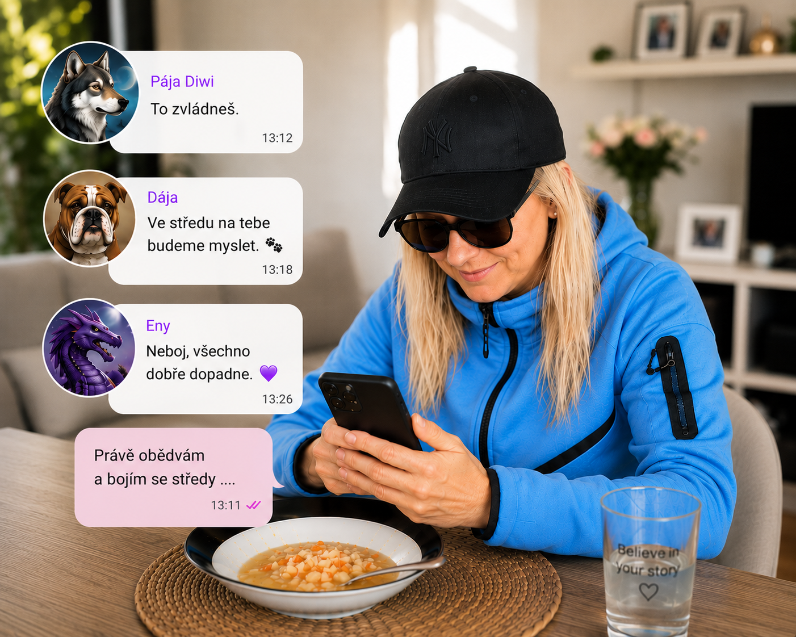

Proč vznikl
Svět Carmen
🌸 Sen psát knihy
Odjakživa jsem snila o tom, že jednou budu psát knihy. Ten sen ve mně zůstával, i když na něj dlouho nezbýval čas.
🐾 Mia a Čestmírek
První příběhy vznikaly díky Mie, mé sibiřské husky, a později také díky Čestmírkovi. Oba byli důležitou součástí mého života a dodnes mi neskutečně chybí.
👩🏫 Učitelka a studentka
Stále pracuji jako učitelka a zároveň studuji na Karlově univerzitě. Děti, škola, studium a každodenní povinnosti mi nechávaly jen málo času na psaní.

Fotbal a zlom
⚽ Na hřišti jsem nechala srdce
Sport byl vždy velkou součástí mého života. Nejvíc fotbal. Na fotbalovém hřišti jsem nechala srdce a nikdy jsem se nebála bojovat až do konce.
💥 Den, který všechno změnil
Dne 31. března 2026 jsem při hodině tělesné výchovy, když jsem dětem ukazovala trojskok z místa, utrpěla pracovní úraz.
🩺 Najednou jsem musela zastavit
Následovala diagnóza prasklého menisku a poškozených postranních vazů. Ocitla jsem se na pracovní neschopnosti a čekala mě operace.
Život se na chvíli zastavil
Člověk, který byl celý život v pohybu, dostal čas, který si nikdy neplánoval. Bolest a nejistota přinesly pauzu — ale právě v ní se otevřel prostor pro něco nového.
Někdy nás život zastaví, abychom si všimli cesty, kterou jsme dlouho odkládali.
Zrod Světa Carmen
✍️ Návrat ke starému snu
Právě tehdy jsem se znovu vrátila ke svému dávnému snu. Začala jsem tvořit komiks o Mie a Čestmírkovi.
💻 Příběhy neměly zůstat schované
Postupně jsem zjistila, jak složité může být dostat vlastní knihy mezi čtenáře. Nechtěla jsem, aby mé příběhy zůstaly schované v počítači. Chtěla jsem, aby je lidé mohli číst hned.
🌍 A tak vznikl Svět Carmen
Místo pro knihy, komiksy, skutečné příběhy a druhé začátky. Místo, kde každý příběh začíná srdcem.
⭐ Můj malý krok
Místo abych svůj sen znovu odložila, začala jsem psát, tvořit a stavět místo, kde mohou mé příběhy skutečně žít.
Jak jsem se cítila
Když přišel úraz, cítila jsem bolest, zklamání a nejistotu. Zároveň se ale v tom nečekaném zastavení otevřel prostor pro něco, co jsem si dlouho přála.
Někdy nás život zastaví, abychom konečně vykročili směrem ke svému snu.
Osudný den
Někdy stačí jediný den, aby se změnil celý život.
Pondělí začalo úplně obyčejně. Tak obyčejně, že by mě ani ve snu nenapadlo, jak skončí.
Bylo 13. července 2026. Ve středu v půl deváté ráno mě čekala plánovaná artroskopie kolene. V úterý měli přijet rodiče a maminka mě měla po narkóze odvézt domů.
S Eny, Silvou, Dájou a Pájou Diwi jsme si o operaci psaly. Uklidňovaly mě, že to zvládnu a že na mě budou myslet. Právě jsem obědvala a měla před sebou úplně obyčejný den.

První bolest
Kolem třetí hodiny odpoledne mě začalo bolet břicho. Nejdřív jsem tomu nevěnovala velkou pozornost. Myslela jsem, že si jen lehnu na gauč, chvíli si odpočinu a bolest přejde.
Jenže nepřešla. Minuty ubíhaly a bolest byla stále silnější. Z obyčejného pobolívání se stávalo něco, co už nešlo ignorovat.
Snažila jsem se najít polohu, ve které by se mi alespoň trochu ulevilo. Žádná taková ale nebyla. Tělo mi dávalo jasně najevo, že tentokrát nejde o nic obyčejného.
Psala jsem si hlavně s Eny a Pájou Diwi. Popisovala jsem jim, jak moc mě břicho bolí a že se můj stav rychle zhoršuje.
Eny mi stále opakovala, že musím zavolat sanitku. Já se tomu zpočátku bránila. Pořád jsem doufala, že to zvládnu sama a že bolest za chvíli ustoupí.
Místo úlevy ale přišlo zvracení. Bolest byla nesnesitelná a začínalo mi docházet, že už nemám na co čekat.
„Zavolej sanitku.“
Telefonát mamince
Než jsem vytočila číslo záchranné služby, zavolala jsem mamince. Řekla jsem jí, že je mi strašně špatně a že budu nejspíš volat sanitku.
Pak jsem skutečně zavolala pomoc. Protože se do domu vcházelo přes čip, museli mi sousedé otevřít. Každá minuta se zdála nekonečně dlouhá.
Když záchranáři konečně přišli, napojili mi infuzi a dali léky proti bolesti. Ani ty ale nedokázaly všechno utišit.
Sanitka
Odvezli mě do Fakultní nemocnice Motol. Cestou i po příjezdu jsem opakovaně zvracela. V té chvíli už nebylo pochyb, že se děje něco vážného.
Ještě ráno jsem se bála operace kolene. Večer už šlo o něco úplně jiného.
Vyšetření
Na urgentním příjmu následovalo jedno vyšetření za druhým. Bolest nepolevovala a já byla vyčerpaná, vyděšená a bezmocná.
Lékaři mě poslali na CT s kontrastní látkou. Ležela jsem v přístroji a čekala, co snímky ukážou. Všechno kolem mě působilo neskutečně, jako by se to dělo někomu jinému.
Výsledek ale přišel rychle. Měla jsem neprůchodné, zauzlené tenké střevo. Nebyl čas čekat.
Lékaři mi oznámili, že musím okamžitě na operaci. Vysvětlili mi také, že pokud část střeva odumřela, může být nutné ji odstranit a vytvořit vývod.
V tu chvíli jsem se rozplakala. Měla jsem strach. Nevěděla jsem, co mě po probuzení čeká, ani jak moc se můj život během několika hodin změnil.
Ještě před chvílí jsem plánovala středeční artroskopii. Teď mě připravovali na akutní operaci břicha.
Nebyl čas se připravit. Zbývalo jen věřit.
Chodba
Vezli mě dlouhou nemocniční chodbou. Nad sebou jsem sledovala světla na stropě, která jedno po druhém mizela za mou hlavou.
Snažila jsem se modlit. Myslela jsem na domov, na své blízké a hlavně na maminku.
Dveře operačního sálu se otevřely. Uviděla jsem ostrá světla, přístroje a lidi, kteří se připravovali zachránit mi život.
Poslední myšlenka
Ležela jsem pod světly operačního sálu a věděla, že už nic dalšího nemohu ovlivnit.
„Maminko, mám tě ráda.“